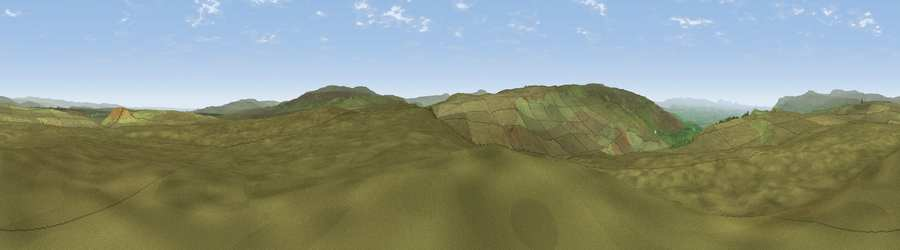

Viewpoint c10186_7750
#9067 in England · top 20% of its area beats it · —The view, rendered

A 360° render of this exact spot computed from the terrain model, tree cover and land cover — summer colours, afternoon light, calibrated against photographs of famous viewpoints. Real trees, hedges and buildings will differ in detail.
The panorama
Grey silhouette: terrain skyline in each direction (720 bearings, Earth curvature and refraction included). Dashed green: skyline with trees (+15 m) and buildings (+8 m) as obstacles. Blue strip: how far the ground is visible on each bearing.
Where the view opens
Wedge length = distance to the farthest visible ground on that bearing (vegetation-aware). Rings at 10, 25 and 50 km.
What fills the view
99% grassland
Angular shares of the visible panorama (visual magnitude), not map area. Landscape diversity 0.02 (0–1 Shannon).
Key numbers
More beautiful places nearby
The staircase of upgrades: each row has a higher view potential than everything closer. Driving times are estimates from straight-line distance, calibrated against real road routing — check an actual route before setting out.
| Place | Direction | Drive | Score |
|---|---|---|---|
| High Greygrits | SSE · 0 km | ~2 min | 65.5 |
| Viewpoint c10212_7709 | WNW · 3 km | ~6 min | 73.4 |
| Viewpoint near Nateby | SW · 9 km | ~18 min | 75.0 |
| Viewpoint near Nateby | SW · 11 km | ~20 min | 75.7 |
| Viewpoint c10024_7603 | SW · 11 km | ~21 min | 76.9 |
| Calders | WSW · 24 km | ~40 min | 79.0 |
| Whernside | SSW · 31 km | ~48 min | 79.9 |
| Viewpoint near Bampton | W · 41 km | ~60 min | 80.4 |
54.47912, -2.19404 · source: screening · position refined by local search. Computed location — check access rights before visiting.